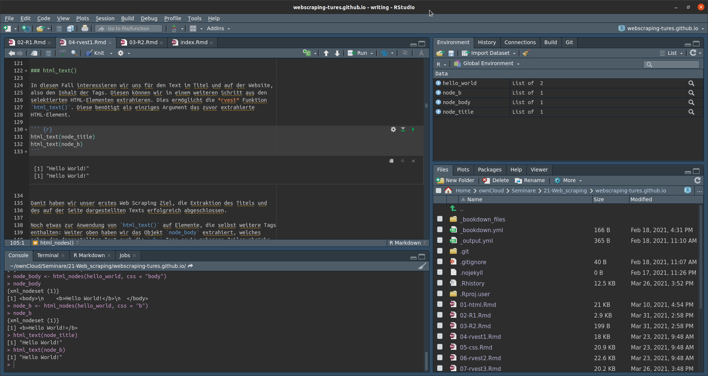

2 R & R Studio
2.1 Installing R
R is a freely available programming language used predominantly for data science and statistical computations. For more information on the language and to access the documentation, visit: https://www.r-project.org/. From there you can also follow the link to CRAN, the Comprehensive R Archive Network, or access it directly by visiting https://cran.r-project.org/.
The latest versions of R will always be hosted at CRAN. At the top of the landing page, you will find links to the installers for each operating system. If you are using Windows, please choose “base” after following the link and then download the offered file. In the case of Mac OS download the first file listed under “Latest release”. In both cases, execute the file and install R to a directory of your choice. If you are using Linux, the link on CRAN will offer installation advice for some of the more popular distributions. In any case, you can check the package manager of your choice for the latest available release for your system.
All examples used on this Website were written and tested with R version 4.0.4 “Lost Library Book”. While it is not to be expected, they might, nonetheless, return errors in newer versions of R.
2.2 RStudio
The basic R installation provides a simple GUI – Graphical User Interface – that could in principle be used to follow the contents of this introduction to Web Scraping. The widely more common approach is to use an external IDE – Integrated Development Environment –, the most popular being RStudio. Using an IDE will dramatically improve your workflow and I would strongly recommend using RStudio for this purpose.
RStudio is also freely available and can be found at https://www.rstudio.com/. Following the “Download” link and scrolling down (ignoring the different versions offered for professional usage) you will find the latest installers for several operating systems offered as downloads. In most cases, simply installing RStudio after R has been installed, will work “out of the box”.
2.2.1 Overview

The RStudio interface consists of four sub-areas. The bottom-left shows the “Console” as well as additional tabs which you will rarely need in the beginning. The console can be used to evaluate R code live. We will begin working with the console soon, so this will make more sense to you in a bit. The top-left shows opened files, e.g. R scripts. This is where you will actually spend most of your time. This introduction proceeds from using one-time commands in the console to writing your code in scripts that can be re-opened, re-run and shared. The top-right has several tabs of which “Environment” should be our main concern at this point. Here you will see all data objects created in your RStudio session. More on this later. Finally, the bottom-right shows us, amongst other things, the “Files” in a selected folder, graphical output under “Plots” and requested “Help” on packages and functions.
2.3 Hello World!
So, let’s begin with putting R & RStudio to use. For now, we will write our
commands directly into the console.
You will notice a > sign at the beginning of the last line in the console.
This is a prompt, as in “write commands here”. Try writing this and executing
the command with the “Enter” key:
print("Hello World!")
## [1] "Hello World!"You just entered your first R command, received your first output and also used
your first function. We will address functions in more detail later. For now, it
is enough to know that the command print() prints everything that is enclosed
in its parentheses to the output. The output begins with [1], indicating that
this is the first, and in this case the only, element of the output generated by
the executed command. Please note, that RStudio will not print ## before the
output. In the shown code segments on this website, ## is inserted before the
output to allow copying the code directly to RStudio, as one or mutliple #
indicate that a line is a comment, and thus is not evaluated as a command by R.
2.3.1 Calculating with R
R understands the basic arithmetic symbols + - * / and thus the console can be
used as a calculator. Many functions for more involved calculations, e.g.
sqrt() for taking a square root of the content enclosed in the parenthesis,
are available. x^y can be used to write x to the power of y. For now, you
should write the code below line for line into the R console and execute each
line with the “Enter” key.
17 + 25
## [1] 42
99 - 57
## [1] 42
4 * 10.5
## [1] 42
84 / 2
## [1] 42
sqrt(1764)
## [1] 42
6.480741 ^ 2
## [1] 422.3.2 Comparison operators
We can use comparison operators to compare two values and receive the test
result as output. To test if two values are equal, we write ==. To test if
they are not equal, we can use !=
42 == 42
## [1] TRUE
42 != 42
## [1] FALSEWe can also compare if the first value is less <, less or equal <=,
larger > or larger or equal >=, compared to the second value.
10 < 42
## [1] TRUE
42 <= 42
## [1] TRUE
10 > 42
## [1] FALSE
90 >= 42
## [1] TRUE2.4 Objects
Some of the power of using a language like R for computation, comes from the
ability to store data or results for later use and further analysis.
In R, all types of data are stored in objects.
On a basic level, an object is a name that we define that has some form of data
assigned to it. To assign data to a name, we use the assignment operator <-.
the_answer <- 42A handy keyboard shortcut for writing the assignment operator is pressing the “Alt” and “-” keys simultaneously. Learning this shortcut early, will safe you on a lot of typing and keyboard gymnastics.
After we assigned a value to an object, we can recall that value, by writing the object’s name.
the_answer
## [1] 42We can also use defined objects in calculations and function calls (more on those later). Note, that if we assign a value to an already defined object, the stored value is overwritten by the new one.
the_answer <- the_answer / 2
the_answer
## [1] 21
a <- 17
b <- 4
the_answer <- (a + b) * 2
the_answer
## [1] 42All objects we define are listed in the “Environment” tab, seen in the upper
right of RStudio. If we ever want to remove objects from the environment,
we can use the rm() function. In general, this is not necessary, but it can
help with keeping the list from getting cluttered.
rm(the_answer)2.5 Vectors
When we assigned a number to an object, we actually created a vector. A vector
is a one-dimensional data structure that can contain multiple elements. The
number of elements determine the length of the vector. So a vector with only
one element is still a vector, but with a length of 1.
To assign multiple elements to a vector, we use the combine function c(). All
values inside the parentheses, separated by ,, are combined as elements to
form the vector.
v <- c(7, 8, 9)
v
## [1] 7 8 92.5.1 Subsetting
If we want to access certain elements of a vector, we have to use subsetting. This is achieved by adding square brackets to the object’s name, containing the position of the element in its vector. In order to access the first or third element, we can write:
v[1]
## [1] 7
v[3]
## [1] 9We can also access multiple elements at once, using c() inside the brackets or
by defining a range of positions using :.
v[c(1, 3)]
## [1] 7 9
v[2:3]
## [1] 8 92.5.2 Types of vectors
Observing the vector v we created in the environment, we notice that RStudio
writes num [1:3] before listing the values of the elements. The second part,
indicates the length of 3, while the first part shows the type of the vector we
created. In this case the type is numeric. Numeric vectors, as you might have
guessed, contain numbers. We can also use str() to receive info on type,
length and content of a vector.
str(v)
## num [1:3] 7 8 9There are a number of other types of vectors, the two most important – besides numeric vectors – being logical and character vectors.
Logical vectors can only contain the values TRUE and FALSE. Strictly
speaking, they – as the other types of vectors – can also contain NA,
indicating a missing value. We will talk more about NAs later on. Logical
vectors are often created when we test for something. For example, we can test,
if the elements in a numerical vector are larger or equal to 5 and receive a
logical vector containing the test results.
x <- c(1, 7, 3, 5)
x >= 5
## [1] FALSE TRUE FALSE TRUECharacter vectors contain strings of characters. When assigning strings, they have to be enclosed in quotation marks.
char_v <- c("This", "is", "a", "character", "vector!")We can compare character vectors only for (non-)equality, not for being smaller or larger.
"same" == "same"
## [1] TRUE
"same" == "not the same"
## [1] FALSE
"same" != "not the same"
## [1] TRUECharacter vectors also cannot be used to calculate. This can get problematic, if numbers are stored as characters, which arises frequently when Web Scraping.
a <- c(1, 2, 3)
b <- c("7", "8", "9")
str(a)
## num [1:3] 1 2 3
str(b)
## chr [1:3] "7" "8" "9"
a + b
## Error in a + b: non-numeric argument to binary operatorAs we enclosed the elements of vector b in quotation marks, R interprets the
data as characters instead of numbers. Since characters cannot be used for
calculations, we received an error message. But we can make R interpret the
characters as numbers by using as.numeric().
a + as.numeric(b)
## [1] 8 10 122.5.3 A brief look at lists
Note that a vector of a certain type, can only contain elements of that type. So we cannot mix data types in the same vector. If we want to mix data types, we can use lists instead of vectors.
l <-list(1, TRUE, "Hello World!")
str(l)
## List of 3
## $ : num 1
## $ : logi TRUE
## $ : chr "Hello World!"Lists can also contain other lists to represent hierarchical data structures. We will see lists “in action” later on in this course.
2.6 Functions
Functions provide an easy and concise way of performing more or less complex
tasks using predefined bits of R code that are provided in “base R” – i.e.
that come with the basic R installation – or in the various additional packages
that are available for installation. We have already used a number of functions
up to this point, e.g. print(). To “call” a function, we write its name,
followed by parentheses. Inside the parentheses additional arguments are
provided to R. In most cases, some data has to be entered as the first
argument. For example, print() writes the text provided as argument to the
output. More complex functions often allow for more than one argument. Sometimes
these are required, but more often these additional arguments are optional and
can be used to change some options from the default value to the one desired.
2.6.1 Help
But how do we know which arguments can or have to be provide to use a function
and what their effects are? We can check the documentation on CRAN or use Google
to find additional information. Another often more convenient way, is to use the
help functionality build into R. By writing ? in front of the function name
into the console and executing the line by pressing “Enter”, the help file is
opened in the lower right of the RStudio window. Let’s try this for the
function rnorm().
?rnorm()The help file tells us several things. rnorm() is part of a family of
functions that are related to the normal distribution, each providing a distinct
functionality. The functionality of rnorm() being the generation of random
numbers stemming from the normal distribution. We also learn, that three
arguments can be provided. n, the number of observations to be generated, as
well as mean and sd, the mean and the standard deviation of the normal
distribution to be drawn from. We also see that mean and sd are provided
with the standard values 0 and 1 respectively, indicated by the =. We also see
that n has no standard value. So we have to provide a value for n, but not
for mean and sd. Just writing rnorm() will result in an error.
rnorm()
## Error in rnorm(): argument "n" is missing, with no defaultTo provide an argument to a function, we write the name of the argument,
followed by = and the value to be provided. Note that, since rnorm() draws
random numbers, your output will differ from the output presented here.
rnorm(n = 10)
## [1] 0.9536784 -1.7869952 0.9081572 0.6752944 -0.5935582 -1.5253821
## [7] -1.0646667 -1.0885872 -1.0620062 -0.4097539In the same vein, additional arguments that are allowed by the function can be defined, instead of using their default values.
rnorm(n = 10, mean = 10, sd = 0.5)
## [1] 9.437122 9.684778 9.891459 9.722530 10.142810 10.208368 10.453979
## [8] 9.785268 10.114224 9.355369We can also skip writing the names of arguments in many cases. As the n
argument is the first listed in the function’s parentheses, R also understands
the call, if we just provide the value to be used as the first argument. You
will often encounter the convention that the first argument is written without
its name and any further arguments are written in full.
rnorm(10, mean = 10, sd = 0.5)
## [1] 9.215647 9.234822 9.917779 9.947024 10.380677 9.812325 9.023497
## [8] 10.203344 10.453516 9.6941092.6.2 Examples: Basic statistical functions
Base R provides us with some basic statistical functions that are used for data analysis.
We should start with defining a numerical vector that contains some data to be analysed.
data <- c(4, 8, 15, 16, 23, 42)We could be interested in describing this data by its arithmetic mean, median
and standard deviation. For this purpose we can use the functions mean(),
median(), and sd() provided by base R. All three do not require additional
arguments besides the data to be analysed which we can provide using the
object data we created beforehand.
mean(data)
## [1] 18
median(data)
## [1] 15.5
sd(data)
## [1] 13.490742.7 If/Else statements
Often we want to write code that reacts to the value of a certain object and
thus “decides” by itself which action to perform, based on this value. To
achieve this, we can use conditional execution by using if and else
statements. The basic syntax look as follows:
if (condition) {
code to be executed when the condition is TRUE
} else {
code to be executed when the condition is FALSE
}if and else are both followed by {}, which enclose the code to be
executed. While it is not strictly necessary to stretch the code over multiple
lines, I would highly recommend doing this. It increases readability of your
code for yourself and anyone you share it with, which makes it easier to
understand and also makes it easier to spot mistakes and correct them. For the
same reasons, it is also recommended to indent the code to be executed.
Conditions are created by applying comparison operators, like ==, <, >,
!= and so on. Thus the condition compares two values and returns TRUE if the
condition is met, and FALSE if it is not met. When the condition for the if
statement is TRUE, the code between the {} following it is executed. If it
is FALSE, the code between the {} following the else statement is
executed instead.
x <- 42
if (x == 42) {
print("This is the answer")
} else {
print("This is not the answer")
}
## [1] "This is the answer"
x <- 24
if (x == 42) {
print("This is the answer")
} else {
print("This is not the answer")
}
## [1] "This is not the answer"In the code above, we first asign a value to the object x and follow this with
an if statement that checks if the value equals 42 and returns a string to
the console, indicating if the condition was met or not.
We can also chain multiple if and else statements to create more complex
decisions. While it is possible to chain a high number of statements in this
way, it is not recommended to overuse this technique. The code will get long,
hard to understand and thus mistakes get more likely.
To chain statements, we use else if statements after the first if and before
the last else. The basic syntac stays the same. Contemplate the example below.
x <- 42
if (x == 42) {
print("This is the answer")
} else if (x < 42) {
print("The value is too low to be the answer")
} else {
print("The value is too high to be the answer")
}
## [1] "This is the answer"
x <- 24
if (x == 42) {
print("This is the answer")
} else if (x < 42) {
print("The value is to low to be the answer")
} else {
print("The value is to high to be the answer")
}
## [1] "The value is to low to be the answer"
x <- 84
if (x == 42) {
print("This is the answer")
} else if (x < 42) {
print("The value is to low to be the answer")
} else {
print("The value is to high to be the answer")
}
## [1] "The value is to high to be the answer"In the first case, the if condition is met and the code following the if
statement is executed. In the second case, the if condition is not met, so the
code checks if the condition for the else if statement is TRUE. It is in
this case, so the code following it is executed. In the third case, both
conditions return FALSE and thus the code following the else statement is
run.
We can also combine conditions by applying logical operators to create more
complex conditions. && – AND – checks if both conditions combined by it
are TRUE and only returns TRUE if both are at the same time. || – OR –
checks if at least on of the conditions is TRUE and returns TRUE if one or
both are. When combining two conditions, we thus have these possibilities:
TRUE && TRUEreturnsTRUETRUE && FALSE,FALSE && TRUEandFALSE && FALSEall returnFALSETRUE || TRUE,TRUE || FALSEandFALSE || TRUEall returnTRUEFALSE || FALSEreturnsFALSE
In most cases, you could also use single & and | operators, to combine
conditions. && and || are the safer alternatives, as they always return a
single TRUE or FALSE and if statements can not interpret a logical vector
containing multiple values. & and | can return such a vector if at least
one object used for comparison is a vector of a length longer than 1. For more
details on this, you can read the corresponding chapter in “R for Data Science”
by Wickham & Grolemund:
https://r4ds.had.co.nz/functions.html#conditional-execution.
x <- 42
y <- 42
if (x == 42 && y == 42) {
print("Both x and y are the answer")
} else {
print("At least one of x and y is not the answer")
}
## [1] "Both x and y are the answer"
x <- 42
y <- 24
if (x == 42 && y == 42) {
print("Both x and y are the answer")
} else {
print("At least one of x and y is not the answer")
}
## [1] "At least one of x and y is not the answer"
x <- 42
y <- 24
if (x == 42 || y == 42) {
print("At least one of x and y is the answer")
} else {
print("Both x and y are not the answer")
}
## [1] "At least one of x and y is the answer"
x <- 12
y <- 24
if (x == 42 || y == 42) {
print("At least one of x and y is the answer")
} else {
print("Both x and y are not the answer")
}
## [1] "Both x and y are not the answer"We can use combined conditions and chaining to create more complex decisions. But be wary to not overuse both techniques, for the same reasons as stated above.
x <- 42
y <- 42
if (x == 42 && y == 42) {
print("Both x and y are the answer")
} else if (x == 42) {
print("x is the answer")
} else if (y == 42) {
print("y is the answer")
} else {
print("Both x and y are not the answer")
}
## [1] "Both x and y are the answer"
x <- 42
y <- 24
if (x == 42 && y == 42) {
print("Both x and y are the answer")
} else if (x == 42) {
print("x is the answer")
} else if (y == 42) {
print("y is the answer")
} else {
print("Both x and y are not the answer")
}
## [1] "x is the answer"
x <- 24
y <- 12
if (x == 42 && y == 42) {
print("Both x and y are the answer")
} else if (x == 42) {
print("x is the answer")
} else if (y == 42) {
print("y is the answer")
} else {
print("Both x and y are not the answer")
}
## [1] "Both x and y are not the answer"Please note, that the code following the statements can be more complex than the
code used in these introductory examples and can be comprised of anything that
is valid R code. Also, each {}can hold multiple lines of code.